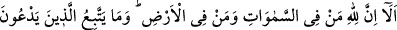
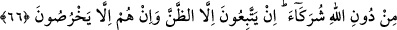
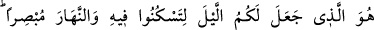
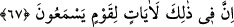

zarar vermez. Dünya nimetleri kendisini ahiret nimetlerinden alıkoymaz. Nitekim Allah
Teâlâ şöyle buyuruyor: “De ki: “Allah’ın kulları için yarattığı süsü ve temiz rızıkları
kim haram kıldı?” (el-A‘râf, 7/32)
Bu durumdaki kişi, Allah Teâlâ’nın kendilerine hem dünyada hem de ahirette iyilik
verdiği özel kişilerden olur. Hatta daha da ötesi bu nimetler bazıları için ahiret
nimetlerini elde etmeye yardımcı bile olabilir. Nitekim rabbânî bir hadiste şöyle
buyrulmuştur: “Kullarımdan öyleleri vardır ki onlara sadece zenginlik yaraşır. Onları
fakir kılsam bu onlara zarar verir.”[62]
66. İyi bilin ki göklerde ve yerde ne varsa hepsi Allah’ındır. Allah’tan başkasına
tapanlar, gerçekte ortak koştuklarına uymuyorlar. Onlar sadece zanna uyuyorlar
ve onlar sadece saçmalıyorlar.
“İyi bilin ki göklerde ve yerde ne varsa hepsi” yani melekler, cinler ve insanlardan
ibaret tüm akıllı varlıklar “Allah’ındır.” Mümkin varlıkların en şereflileri olan bu
varlıklar Allah Teâlâ’nın kulları olup O’nun kudreti ve hükümranlığı altında olduğuna
göre onların dışındaki varlıklar haydi haydi öyle olacaklardır. Öyle ise Allah Teâlâ
onlara karşı sana yardım etmeye mallarını da yurtlarını da sana vermeye kadirdir.
“Allah’tan başkasına tapanlar, gerçekte ortak koştuklarına uymuyorlar.” yâni
Allah’tan başka ilahlara tapanlar, her ne kadar bunlara Allah’ın ortağı diyorlarsa da
aslında O’nun ortaklarına tâbi olmuyorlar. Çünkü rubûbiyette Allah Teâlâ’ya ortak
olmak muhaldir.
“Onlar sadece zanna uyuyorlar.” Onlar, sadece tapındıkları şeylerin Allah’ın ortağı
oldukları şeklindeki zanlarına uyuyorlar. “ve onlar sadece saçmalıyorlar.” Allah’a
isnad ettikleri şeyler konusunda yalan söylüyorlar.
Sonra Cenab-ı Hak müşriklere kulluk edilmeye sadece kendisinin layık olduğunu
göstermek için üstün kudretin her şeyi kapsayan nimetin sadece kendisine âit olduğuna
dikkat çekerek şöyle buyuruyor:
67. Geceyi sizin istirahat etmeniz için, gündüzü de aydınlık yapan O’dur.